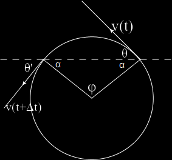

1.7 Moti su traiettoria curvilinea. Accelerazione tangenziale e normale
Nel paragrafo 1.2, abbiamo visto che nel caso generale (con traiettoria non necessariamente rettilinea) la posizione di un punto P può essere individuata attraverso il raggio vettore r(t), quindi attraverso le tre coordinate x(t), y(t) e z(t). La natura vettoriale delle variabili cinematiche implica che siano necessarie tre informazioni per identificarle.
Operativamente comunque, in base a (1.8), l'analisi e la soluzione di problemi tridimensionali (o 2D) ricalcano quanto visto nei parr. dedicati al moto rettilineo: semplicemente per ogni coordinata si userò e si risolverà il corripondente set di equazioni (1.8). In sostanza il moto viene scomposto nei tre moti rettilinei proiettati su tre assi.
Se la traiettoria è nota, però, è possibile anche utilizzare un diverso approccio, in cui la posizione del punto P nello spazio è individuata da una singola coordinata curvilinea s, detta ascissa curvilinea. Il valore di s esprime la lunghezza del tratto di traiettoria tra un'origine arbitraria O scelta sulla traiettoria P Figura 1.14, e varia
nel tempo durante il moto. Se diamo la forma della traiettoria e la funzione s(t) abbiamo fornito una descrizione completa del moto.
Ciò è dimostrato dal fatto che, come ora vedremo, la velocità e Vaccelerazione
del corpo possono essere calcolati usando esclusivamente lascissa curvilinea e la geometria della traiettoria (data dal versore tangente uT, paragrafo 1.2).
Abbiamo già notato, Figura 1.2b, che al limite l'incremento dr del raggio vettore risulta in direzione tangente alla traiettoria nel punto P e in modulo eguale allo spostamento infimitesimo ds lungo la traiettoria (l'arco di curva percorso), per cui possiamo scrivere dr = ds uT, dove uT, è il versore della tangente alla curva variabile in direzione nel tempo man mano che il punto avanza lungo la traiettoria. In sostanza pensiamo il moto come una successione di spostamenti rettilinei infinitesimi con direzione variabile: la direzione istantanea del moto coincide con quella della tangente alla traiettoria nel punto occupato all'istante considerato. La (1.1) diventa:
Pertanto la velocità vettoriale v ha in ogni istante la direzione e il verso del moto (la tangente alla traiettoria) e modulo pari a v = ds/dt.
Abbiamo visto che a livello infinitesimo dr = dsuT; però dalla fig.2 si capisce che per uno spostamento finito l'incremento del raggio vettore Δr è ben diverso dallo spazio effettivamente percorso lungo la curva (uno è la corda, l'altro l'arco). Si faccia quindi attenzione a non confondere i due concetti, raggio vettore e suoi incrementi finiti da una parte, percorso effettivo dall'altra; per es. un punto potrebbe percorrere un'orbita chiusa ritornando al punto di partenza e in tal caso il raggio vettore non cambia, ma il punto ha percorso una traiettoria finita (Δr, Δs ≠ 0) con velocità vettoriale istantanea diversa da zero (semmai, con ovvia estensione dal moto rettilineo, risulta nulla la velocità vettoriale media).
L'accelerazione deve esprimere le variazioni della velocità sia come modulo che direzione, quindi ci aspettiamo che abbia due componenti, una legata alla variazione del modulo della velocità e la seconda al cambiamento di direzione del moto. Nel moto rettilineo, dove la velocità mantiene sempre la stessa direzione, l'accelerazione è espressa da un solo termine.
Nella Fig. 1.5 è mostrata la situazione in modo qualitativo, ma già si capisce che l'accelerazione non è parallela alla velocità ed è diretta verso la concavità della curva che rappresenta la traiettoria.
Per dimostrare che i triangolo formati dai vettori posizione r(t) e r(t + Δt) e quello formato dai vettori velocità v(t) e v(t + Δt) sono simili, si consideri la figura sottostante.
L'angolo tra i due vettori velocità è θ + θ′, dove θ e θ′ sono gli angoli formati dai vettori velocità con la corda (linea tratteggiato) della circonferenza. Si ha θ + α = π/2, da cui, θ = π/2 − α. In modo simile, θ′ + π/2 + α = π ⇒ θ′= π/2 − α. Quindi,
θ + θ′ = (π/2 − α) + (π/2 − α) = π − 2α.
α è l'angolo che compare nei triangoli isosceli 2α = π − θ e quindi
θ + θ′ = π − (π−θ) = θ
come richiesto.
La prima componente, parallela alla velocità e quindi tangente alla traiettoria, esprime la variazione del modulo della velocità; il secondo termine, dipendente dalla variazione di direzione della velocità, è ortogonale a questa: uN è un vettore ortogonale a uT diretto verso la concavità della traiettoria, e dφ/dt indica qunato rapidamente cambia la direzione di uT e quindi di uN. Per esprimere in maniera più significativa la componente normale, rocirriamo alla Fig.16 che mostra moto durante un intervallo di tempo infinitesimo dt. Le rette normali alla traiettoria in due punti molto vicini tra loro si incontrano nel punto C, che coincide con il centro della circonferenza tangente alla traiettoria nel punto P (circonferenza osculatrice) e si chiama anche centro di curvatura della traiettoria nel punto P.
Abbiamo dalla definizione di angolo radiante
dφ = ds/R
dividendo per dt
e sostituendo nell'espressione dell'accelerazione trovata prima
in modulo
a = sqrt(aT2 + aN2) = sqrt[(dv/dt)2 + v4/R2]
Le due componenti si chiamano accelerazione tangenziale e accelerazione normale o centripeta (perché diretta sempre verso il centro di curvatura).
In un moto curvilineo vario entrambe le componenti sono diverse da zero; se pero il moto curvilineo è uniforme, aT nulla. Invece nel moto rettilineo vario è nulla 4 e solo nel moto rettilineo uniforme aT = aN = 0. In altre parole con aT ≠ 0 il moto è sempre vario, con aN ≠ 0 è sempre curvilineo.
Le proprietà discusse finora non hanno bisogno del supporto di un sistema di riferimento (sono invarianti), a differenza delle componenti cartesiane, paragrafo 1.2, che sono legate a un sistema di riferimento.
Nel caso di un moto piano è facile trovare la relazione tra componenti cartesiane (1.6), e componenti tangenziale e normale dell’accelerazione (1.27).
Nella situazione rappresentata in Figura 1.17, detto φ l'angolo che uT, forma con ux, si deduce che:
ax = (dv/dt) cos φ + (v2/R)sen φ
ay = (dv/dt) sen φ + (v2/R)cos φ